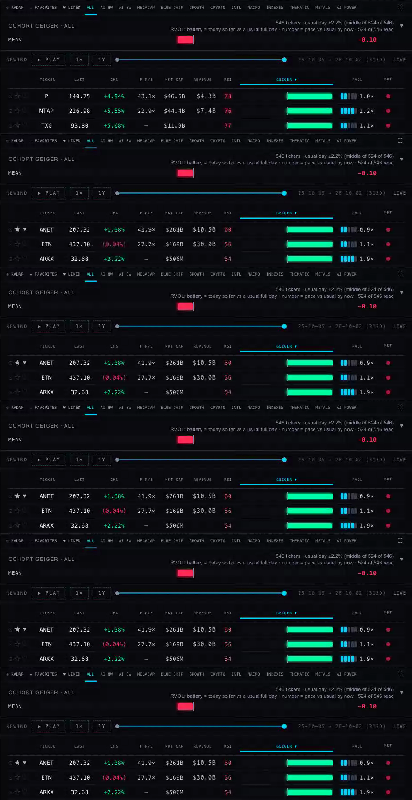
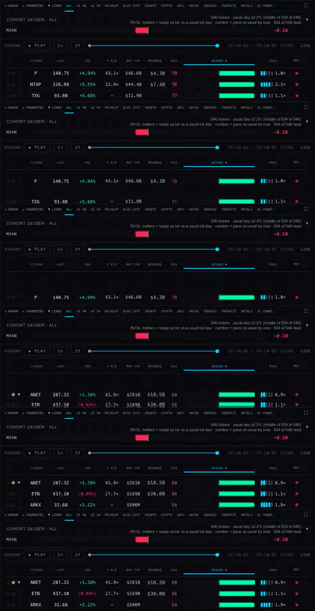
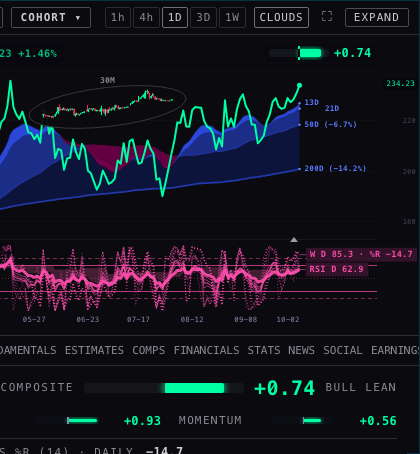
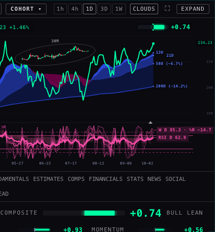
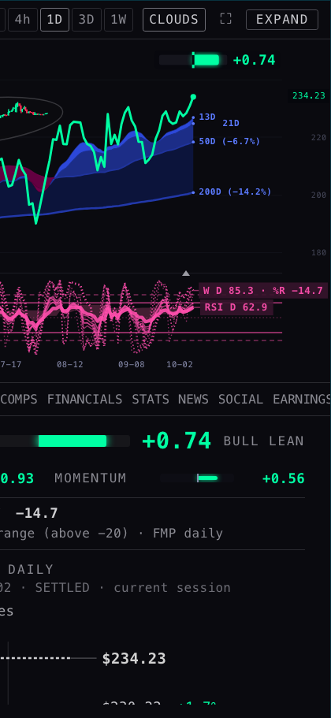
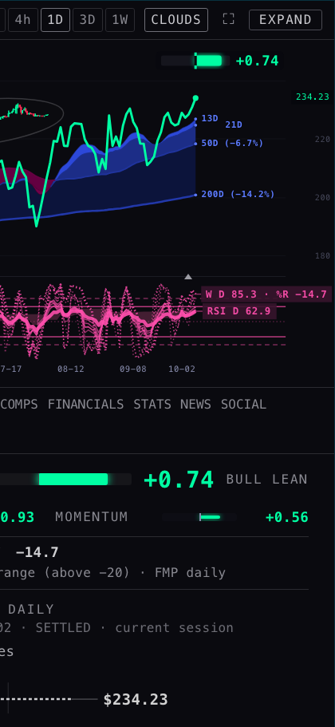
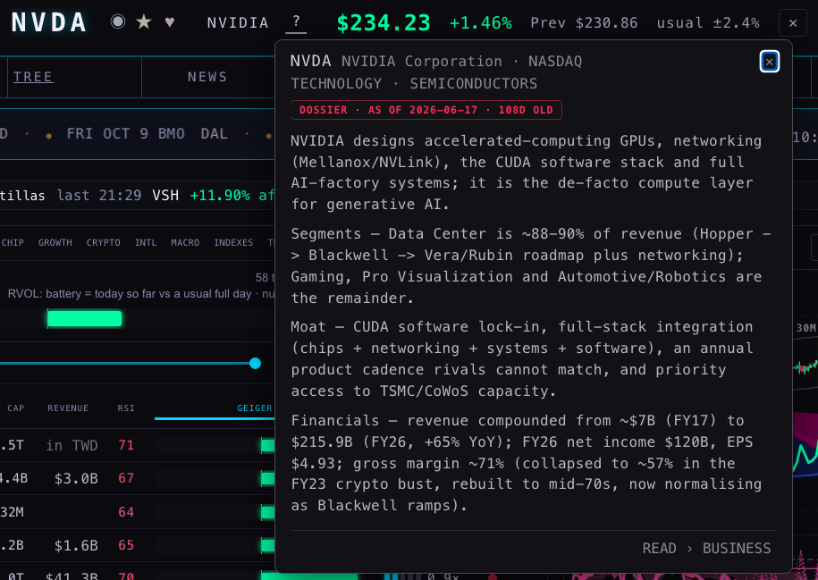
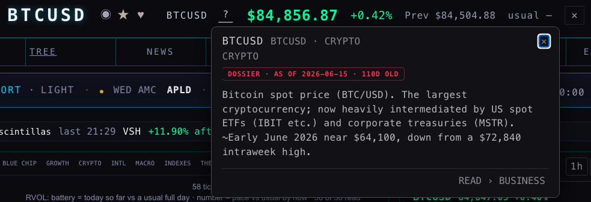
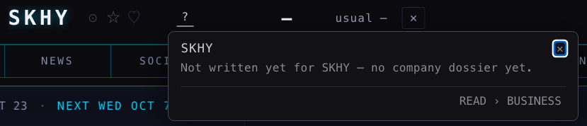

H10 · THE BOARD STOPS JUMPING ON THE iMAC
hub/h10-imac-board-20261003 · built on the live Hub (9d2b1ca) · nothing deployed — waiting for your approval1 · The numbers first — your iMac's screen, a slow CPU
Measured in a hidden test browser on this MacBook, made to behave like a slow machine: the CPU slowed down six times, the iMac's screen (2240 × 1260, sharp-screen pixels). Each line is the middle of three runs, before (the live Hub) and after (this branch) run one after the other. "Frames a second" is how smoothly the page answers; 60 is smooth, under 20 is the stutter you felt. A "long task" is a moment the page is frozen for more than 1/20 of a second.
| ALL (546 names) · 6× slower CPU | frames a second | typical frame | slowest 1 in 20 | long tasks | worst freeze |
|---|---|---|---|---|---|
| Scrolling the board (4 s of wheel) | 7.9 → 24.6 | 100 → 32 ms | 458 → 75 ms | 36 → 32 | 460 → 82 ms |
| Three refreshes that re-sort (pointer away) | 8.1 → 72 | 67 → 8.6 ms | 450 → 18 ms | 78 → 7 | 838 → 511 ms |
| Scrolling while three refreshes land | 5.2 → 18 | 91 → 41 ms | 1,051 → 149 ms | 35 → 37 | 953 → 342 ms |
| One refresh's own work | 750–920 ms → 145–490 ms (the first after a cohort opens is the slowest) | ||||
| The row under a resting pointer after a re-sort | JCI → AMD (it changed under the mouse) → JCI → JCI (it stays; the board scrolls 25 px to keep it there) | ||||
| RADAR (17 names) · 6× slower CPU | frames a second | typical frame | long tasks |
|---|---|---|---|
| Scrolling | 110 → 117 | 8.3 → 8.3 ms | 2 → 0 |
| Refreshes | 107 → 100 | 8.3 → 8.3 ms | 3 → 3 |
| Scrolling while refreshes land | 103 → 110 | 8.3 → 8.4 ms | 4 → 0 |
RADAR was already light — 17 rows — which is why it felt "a little better". ALL was the problem: every refresh rebuilt all 546 rows (about 21,000 pieces of page), and every frame repainted the whole board because 63 RSI numbers "breathe".
2 · A re-sort: before it jumped, now the rows slide


The rules now (your words: "I'd prefer to see the actual movement happen than a glitch"):
- A refresh changes only the cells whose value changed. The board is never rebuilt on a refresh.
- When the order changes, rows slide to their new places. A name coming from far down enters from the bottom edge; one leaving slides out.
- While you scroll the board or move the mouse over it, the new order waits, and lands 1.5 s after you stop.
- When it lands, the row under your mouse stays under your mouse (the board scrolls to keep it there). With the mouse elsewhere, the scroll position stays.
- Clicking a column header still re-sorts at once — you asked for it — and it slides too.
- On ALL, only the rows within one screen of what you see take part in drawing; the rest cost nothing until you scroll near them. The scrollbar and every position are exactly as before (checked: 0 px error at five scroll positions).
3 · REWIND / PLAY
What the replay did: on each replayed day it re-sorted by that day's Geiger and animated only rows whose old place was on screen — everything else teleported, so the top of the board filled with names that appeared from nowhere. It also re-stacked all 546 rows each day. Now: it calls the same slide the live board uses (fewest rows moved, every row on screen or arriving animates). The timing per day is unchanged (the speed chip still sets it). I could not find a copy of the older rewind that "showed the entire table moving" to compare against frame for frame; what it showed — rows travelling rather than appearing — is what both now do.
4 · The company view's right edge
An automatic check looked at every piece of the company view (and inside the chart) at six screen sizes for anything cut by its box, by the panel, or by the window edge, and anything hidden behind an invisible sideways scroll.
| Screen | Cut before (GEIGER view) | Cut after | Inside the chart (axis, Geiger readout, RSI / Williams chips) |
|---|---|---|---|
| 1280 × 690 | READ tab off the edge (44 px) · EARNINGS cut (9 px) | 0 | 0 → 0 |
| 1440 × 810 | READ off the edge (46 px) · EARNINGS cut (8 px) | 0 | 0 → 0 |
| 1680 × 1050 | READ off the edge (53 px) · EARNINGS cut (9 px) | 0 | 0 → 0 |
| 1920 × 1080 | READ off the edge (60 px) · EARNINGS cut (10 px) | 0 | 0 → 0 |
| 2240 × 1260 | READ off the edge (60 px) · EARNINGS cut (10 px) | 0 | 0 → 0 |
| 2560 × 1440 | READ off the edge (60 px) · EARNINGS cut (10 px) | 0 | 0 → 0 |
The tab row was the "axis overflowing": it was a sideways-scrolling strip with its scrollbar hidden, so READ sat past the right edge and a trackpad swipe over it slid the tabs sideways. The ten tabs need about 541 px and the panel gives about 500 at every size (the page zoom scales both), so at 11 px they cannot fit on one line: they now wrap to a second line (the phone already did this). STATS lines that ended in "…" ("dividends FY26") now wrap too. Inside the chart nothing was cut for NVDA or for BTC's wide price (84,828.86) — the price axis and the W / RSI chips fit at every size.




All six sizes, before and after, whole panel and right edge: screens/before-co-*.png, screens/after-co-*.png.
Still cut, in other tabs (not changed here): the COMPS table runs 79–105 px past the panel (the COMPS lanes C5 / C5B are rebuilding it today — fixing it here would collide); the EARNINGS strip in EVENTS is a sideways scroller with a sliced card at its edge; ESTIMATES' moving revisions tape is cut on purpose (it scrolls).
5 · "?" — what is this business, one click away



- The "?" sits right after the company name in the header, in the Hub's tab look (grey, underlined while open).
- It opens READ's BUSINESS text. If a company has no dossier but the provider profile has a description, that shows instead, labelled "company profile · FMP". Otherwise: "Not written yet for SKHY — no company dossier yet."
- READ › BUSINESS at the foot opens the full READ tab on BUSINESS.
- Esc, ✕, a click outside, a scroll or a window resize closes it; Esc closes only the panel, not the company view, and the keyboard focus goes back to the "?".
6 · Developer text on screen
A walk through every room and every company tab (NVDA, and SKHY which has little data) collected visible sentences that read like code: table names, "(DB)", function names. 13 replaced with plain words:
| Was on screen | Now |
|---|---|
| Desk narrative auto-generates per ticker from read_blocks / ticker_context (DB) once its dossier is loaded. (READ, every sub-tab) | Not written yet for SKHY — no company dossier yet. (how READ is written moved to a closed PAGE SPECS fold at its foot) |
| No company releases yet — fills from company_releases. | No company releases yet. |
| No estimate rows in analyst_estimates for $SKHY. | No analyst estimates for $SKHY yet. |
| No price_target_consensus or analyst_ratings rows for $SKHY. | No analyst price targets or ratings for $SKHY yet. |
| No P/E inputs loaded — eps_ttm and forward EPS are both empty (trailing P/E is computed live from price / eps_ttm — stored trailing_pe goes stale…) | No P/E yet — no earnings per share on record, trailing or forward. |
| No rating changes yet — fills from analyst_grades (firm · upgrade/downgrade · …) | No rating changes yet. |
| not stored — no quarterly balance sheet (balance_history) | not stored — no quarterly balance sheet |
| not stored — no quarterly cash-flow statement (cashflow_history) | not stored — no quarterly cash-flow statement |
| No rows in fundamentals_history / balance_history / cashflow_history for $SKHY. | No financial statements on record for $SKHY yet. |
| No earnings events in earnings_events for $SKHY. | No earnings dates on record for $SKHY yet. |
| headlines · live from news (DB) | headlines · live |
| Search a single ticker to see its company releases (from company_releases) + investor-relations link. | Search a single ticker to see its company releases and its investor-relations link. |
| social_sentiment source=youtube (DB) · yt-lexicon-v1 · 7-day window | YouTube transcripts · 7-day window |
Found and left for your call (23) — source lines that name a table, mostly written on purpose by other lanes as "where this number comes from":
- ESTIMATES (7): "analyst_estimates · forward annual", "price_target_consensus", "(analyst_estimates_daily)", "(analyst_target_news)", "(price_target_summary_daily)", "(ratios_history)", "MEDIAN TARGET = … (FMP price_target_consensus)".
- FINANCIALS (6): "fundamentals_history · fiscal years", "fundamentals_history · Q3·26 = …", "balance_history · net debt = …", "cashflow_history · fiscal years …", "cash spent on property and equipment · cashflow_history", the offerings legend.
- SOCIAL (2): "youtube_videos · subscribed channels only · 820 search-found videos left out", "(youtube_videos, source = subscription)".
- SENTIMENT (6): "sentiment_ticker_daily · 963 stored ticker-days … method lm-v1", "(news_headline_sentiment)", four how-it-is-scored paragraphs that name youtube_videos / the lexicon.
- EVENTS (1): "… by unlock-watch (ipo_lockups)". ECONOMIC (1): "releases: econ_calendar … treasury_rates (job treasury-curve-daily …)".
- Not ours: a news story reading "in the undefined quarter" (the provider's text), a tweet handle with an underscore, a file name in FILES.
7 · What could be wrong
- The timings come from a hidden browser on this MacBook slowed down six times, not from your iMac. The before → after ratio is the claim; your iMac's absolute numbers will differ. Runs vary (ALL scrolling read 21–31 frames a second after, across runs).
- On ALL, rows more than a screen away are taken out of drawing. ⌘F (find on page) no longer finds a ticker far down ALL; the board's own search box still does.
- The re-sort waits while your mouse moves over the board. If you keep moving over it, the order keeps waiting (the numbers in each row still update). It lands 1.5 s after you stop.
- The tab row is now two lines at every size (READ, and on narrow screens EARNINGS, sit on the second line). That moves the company view's content down by one line.
- A price written by the 2 s live tick shows without a thousands comma (84803.81) and one written by a refresh with it (84,803.81). That was already so on the live Hub; this branch does not change it.
8 · What I did not do
- Nothing deployed. Nothing written to any table. No edit under INDICATOR_LAB, prototypes/indicator-lab or lab.html.
- The COMPS table cut (another lane's tab, being rebuilt today), the EARNINGS strip scroller, and the 23 source lines in section 6.
- Inside the Station's chart (a separate site in a frame) nothing was cut at the six sizes, so nothing there was changed.
- Hub tests: 1,862 pass, 6 fail — the 5 known failures plus the REGIME test that fails on and off. 15 new tests for items 1–6; five assertions in four older test files now pin the plain wording.
Decisions for Alan
- The company tabs on two lines, or shorter names to keep one line (e.g. FUNDAMENTALS → FUNDS). Recommendation: two lines — nothing renamed, nothing cut.
- The 23 source lines naming tables (section 6): move every table name into each tab's PAGE SPECS fold and leave a plain source ("FMP · fiscal years"). Recommendation: yes, as one pass once the analysts / revisions / comps lanes have landed.
- The re-sort wait: 1.5 s after you stop, with the row under the mouse held in place. Recommendation: keep — try it on the iMac first.
PAGE SPECS
How it was measured. Every browser was hidden (headless Chromium via playwright-core); the Hub was served from this branch under its own address so the chart API answers; every write request was answered locally and counted (0 sent). The "before" runs serve the live line's index.html (9d2b1ca) through the same script. CPU slowdown: Chrome DevTools' CPU throttling at 6×. Screen: 2240 × 1260 at device scale 2. Frames: requestAnimationFrame gaps; long tasks: the browser's PerformanceObserver; a "refresh" is the feed's own path (mergeBoardRows → sync) with about one name in twelve moved, as a weekend /geiger pull does.
tools/perf.mjs— the frame / long-task measurement (perf-rep-*.json, rep-summary.txt).tools/verify.mjs— rows within 0 px of their computed place, order = the model, = a full rebuild, the wait while scrolling.tools/probe.mjs— Chrome trace: what forced layout and repaint (the RSI breath; 806 layout invalidations in 2.5 s before).tools/crop.mjs— the clip check at six sizes, all tabs, and the "?" pictures.tools/devtext.mjs— the developer-text walk.tools/capture.mjs— the re-sort and PLAY recordings (cut with ffmpeg into captures/).
Code: index.html — updateBoard → boardPatch / boardPatchRow (cell-level patch), scBoardSlide (fewest moves — the longest run already in order stays, as Vue 3 and Inferno do — then FLIP), boardSettle (the 1.5 s wait and the pointer anchor), boardWindow (windowing with exact margins, in layout pixels under the page zoom), the replay's orderPass → scBoardSlide; the RSI breath as a filter; indexed row lookups in the 2 s price tick; cached number formatters; bizOpen / bizPopHTML (the "?"); readTxtHTML's plain empty state + PAGE SPECS. Tests: tests/h10-imac-board.test.mjs.